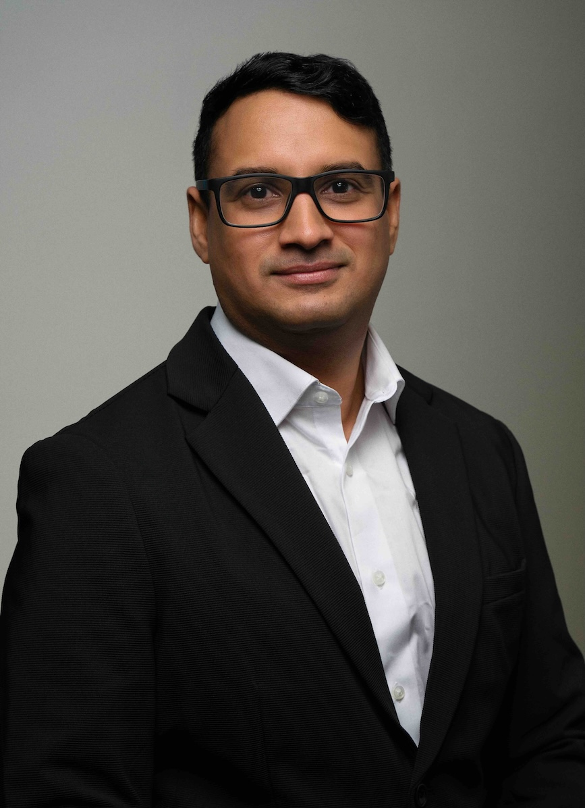

Ganesh Sivaraman
Assistant Professor, Department of Materials Design & Innovation, SUNY Buffalo
Education
- PhD, Engineering Physics, University of Stuttgart, Germany (2017) :contentReference[oaicite:0]{index=0}
- MSc, Mathematical Modelling in Engineering, University of L’Aquila → University of Hamburg, Germany (2012) :contentReference[oaicite:1]{index=1}
- B.Tech., Mechanical Engineering, University of Kerala, India (2007) :contentReference[oaicite:2]{index=2}
Employment History
- Assistant Professor, Department of Materials Design & Innovation, University at Buffalo (Jan 2025–Present) :contentReference[oaicite:3]{index=3}
- Research Assistant Professor, Department of Chemical & Biomolecular Engineering, University of Illinois Urbana-Champaign (Sept 2023–Jan 2025) :contentReference[oaicite:4]{index=4}
- Assistant Computational Scientist, Data Science & Learning Division, Argonne National Laboratory (June 2020–July 2023) :contentReference[oaicite:5]{index=5}
- Postdoctoral Researcher, Leadership Computing Facility, Argonne National Laboratory (Aug 2017–May 2020) :contentReference[oaicite:6]{index=6}
Honors & Awards
- Materials Chemistry Horizon Prize: Stephanie L. Kwolek Prize (AI for Science Track), Royal Society of Chemistry, 2025
- Impact Argonne Award, Argonne National Laboratory, 2022 :contentReference[oaicite:8]{index=8}
- Outstanding Reviewer Award, *Machine Learning: Science & Technology* (Institute of Physics Journals), 2021 & 2022 :contentReference[oaicite:7]{index=7}